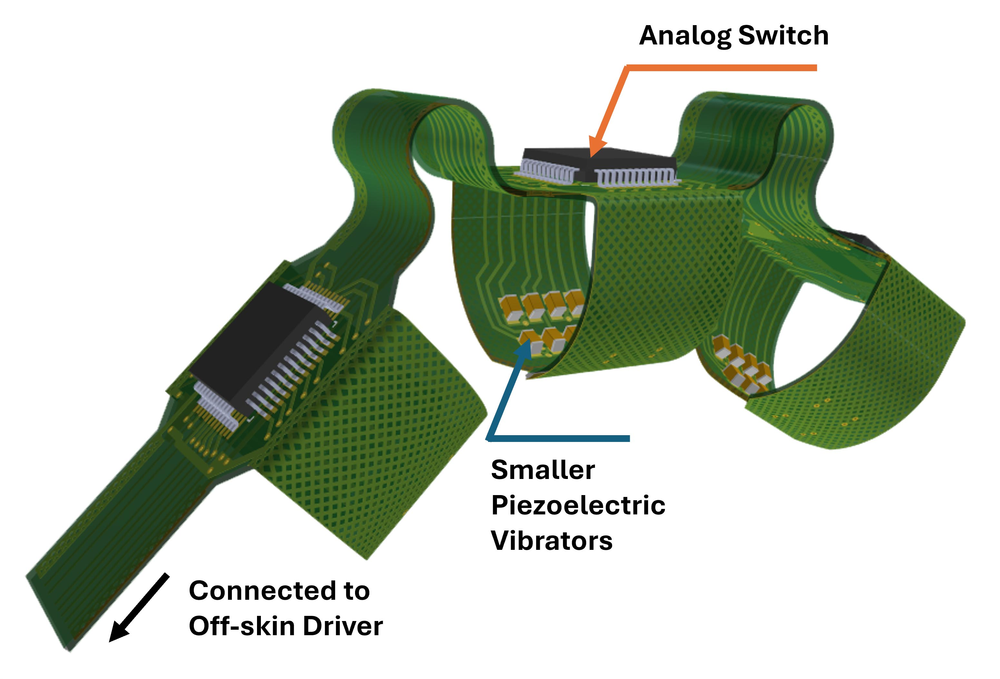
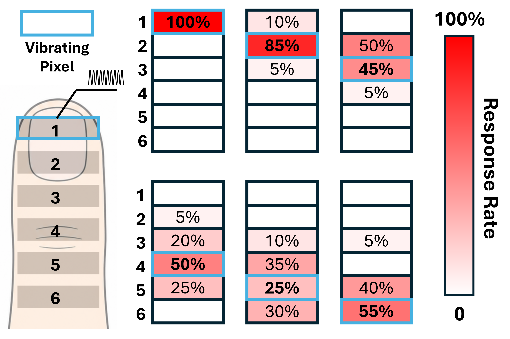
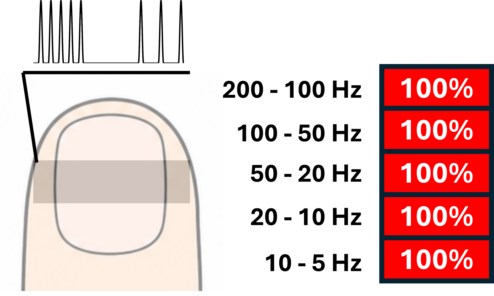
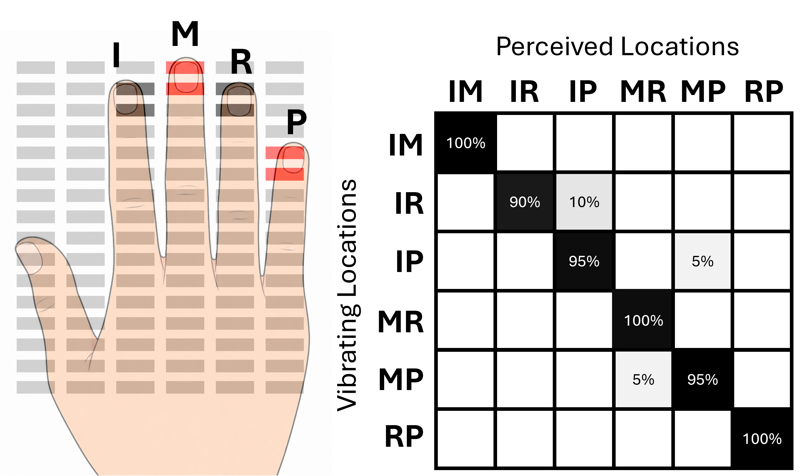
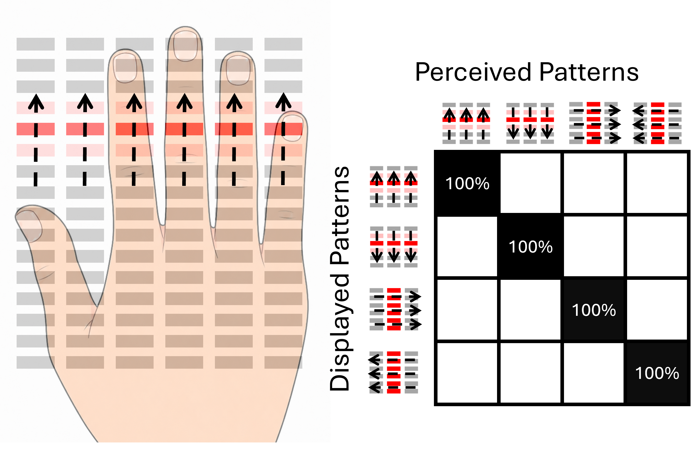
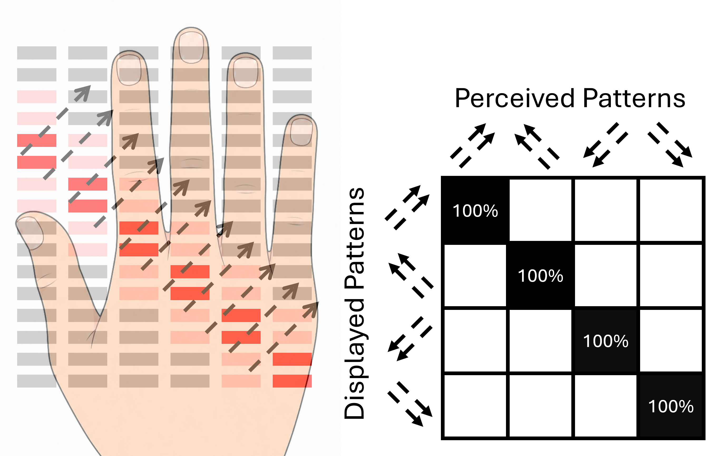

Frequency-Modulated Piezoelectric Haptic Display
Shared Source Frequency Modulation
Interesting

Second image description.
Experiment Results

First image description.

Second image description.

Third image description.

Fourth image description.

Fifth image description.

Dixth image description.
Future Work
Interesting
Second image description.
BibTeX
@article{YourPaperKey2024,
title={Your Paper Title Here},
author={Boyuan Liang and Second Author and Third Author},
journal={arXiv},
year={2026}
}